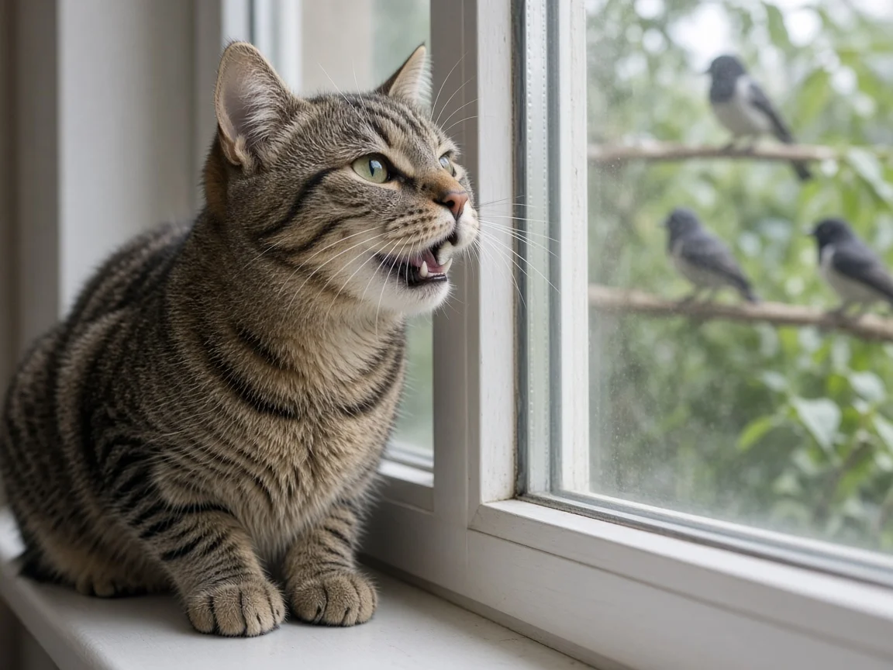

Why do cats chirp and chatter?
Cats chirp and chatter mainly when they see prey they cannot reach, such as a bird at the window, as part of their hunting sequence. The short, staccato sounds sit between a meow and a soft call, and the jaw often quivers as if the cat is rehearsing a killing bite. On its own, chirping at the glass is normal excitement, not distress. It is different from the meows cats use mainly toward people.

What chirping and chattering sound like
Owners describe a mix of soft chirps, chirrups and a rapid teeth chatter when a cat locks onto a bird, squirrel or insect on the other side of a window or fence. International Cat Care groups these with other feline vocalizations in its communication advice and notes that cats use a wide range of sounds in different contexts. Cats Protection's body language and sounds guidance likewise treats chirps and chatters as part of normal cat communication, often seen when a cat is intently focused on something moving.
The posture usually matches hunting focus: still body, forward ears, dilated pupils, and a tail that may twitch at the tip. That is the same stalk-and-focus pattern covered in our cat behavior guide, not the relaxed face of a social purr or slow blink.
Why window birds trigger it
Wild and free ranging cats hunt small vertebrates with a stereotyped sequence: detect, stalk, chase, grab, and deliver a precise bite to the neck or skull. When a house cat sees prey it cannot reach, many researchers and veterinary behavior writers treat the chirp and jaw chatter as arousal tied to that unfinished sequence. One common explanation is that the jaw motion echoes the bite used to kill prey; another is that the sound is an excited or frustrated hunting call. Peer reviewed work has not settled on a single proven function the way the solicitation purr has been tested in the lab, so treat those as informed hypotheses rather than settled fact.
John Bradshaw's comparative review of cat sociality in the Journal of Veterinary Behavior emphasizes that domestic cats keep a strong predatory repertoire even when they live with people and do not need to hunt for food. Chirping at the window fits that leftover hunting program. Meows, by contrast, are used far more toward humans than toward other cats; see why do cats meow at humans? for that separate channel.
Chirp vs meow vs purr
- Chirp or chatter at birds: hunting focus, often with teeth chatter; usually aimed at prey the cat can see.
- Meow: mainly a cat-to-person request or greeting. ASPCA cat communication notes treat meowing as a sound adult cats direct at people more than at other adult cats.
- Purr: a contact rumble used in many social and sometimes stressful situations; details in why do cats purr?.
A cat can switch among these in one afternoon. Chirping at a robin, then meowing at you for a treat, then purring on your lap, are three different messages.
Should you stop the chirping?
You do not need to stop normal window chirping. It is enrichment: visual hunting practice without a corpse on the doorstep. If you want to cut real wildlife kills, that is a separate goal. Our how to stop cat hunting guide covers bells, supervised outdoor time, and indoor enrichment that channels the same drive into toys. Closing blinds only when birds are nesting nearby, or moving a bird feeder farther from the glass, can also reduce frantic focus without punishing the cat.
Punishing chirps risks confusing a cat that is doing something natural. Offer a wand toy after a bird-watching session instead, so the hunt can finish with a catch of fabric rather than frustration at the pane.
When chirping is not just bird watching
Most chirps at windows are harmless. Call your vet if jaw chattering comes with drooling, pawing at the mouth, bad breath, or refusal to eat, because dental pain and oral disease can change mouth sounds and chewing. Sudden, constant vocalizing with restlessness, especially in an older cat, can also signal pain or cognitive change and deserves a check rather than a wait and see approach. Papers and charity guides behind this page are gathered on our cat research page.
Cat chirping FAQ
Why does my cat chirp at birds through the window?
It is usually hunting excitement or frustration when prey is visible but out of reach. The jaw chatter may echo the bite cats use on prey.
Is cat chattering a sign of stress?
Short chirps and chatters at birds are normal arousal, not proof of chronic stress. Look at the whole body: a stiff, hiding, or over-grooming cat needs a different response than an alert bird watcher.
Do cats chirp at people?
Some cats use soft chirps as a greeting toward people they like, but the rapid teeth chatter is most typical toward prey. Meows remain the main cat-to-person request sound.
Should I let my cat watch birds all day?
Window bird watching is fine enrichment for many cats. Pair it with play so the hunting sequence can finish, and manage feeders or blinds if wildlife protection is a priority.
Why does my cat's jaw quiver when it sees a bird?
That quiver is the classic chatter. Behavior writers often link it to the predatory bite pattern, though a single proven lab explanation is still lacking.
Sources
Cite this page
Students and teachers are welcome to cite this page. Add your access date if your teacher or style guide asks for one.
APA (7th ed.)
MeowWise. (2026, November 5). Why do cats chirp and chatter? https://meowwise.com/blog/why-do-cats-chirp-and-chatter.html
MLA (9th ed.)
“Why do cats chirp and chatter?” MeowWise, 5 Nov. 2026, meowwise.com/blog/why-do-cats-chirp-and-chatter.html.
Chicago (bibliography)
MeowWise. “Why do cats chirp and chatter?” Last modified November 5, 2026. https://meowwise.com/blog/why-do-cats-chirp-and-chatter.html.
General education, not veterinary advice. If you are worried about your cat, contact your veterinarian; in an emergency, go to the nearest emergency vet.